Inflation in bluescreens
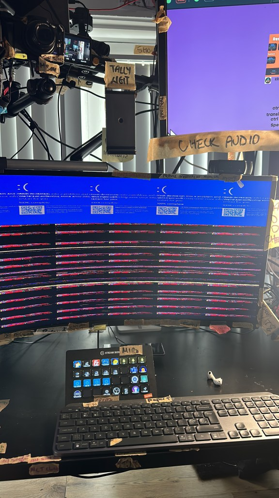
Could not figure out the reason yet
gpt said
The bluescreen error with the failure bucket ID "AV_R_(null)_amdkmdag!unknown_function" is likely related to a problem with the graphics processing unit (GPU) driver. It could be caused by a number of factors, such as outdated drivers, conflicting software, or hardware issues. Updating the GPU driver to the latest version may help resolve the issue. If updating the driver does not work, it may be necessary to troubleshoot other potential hardware or software issues.
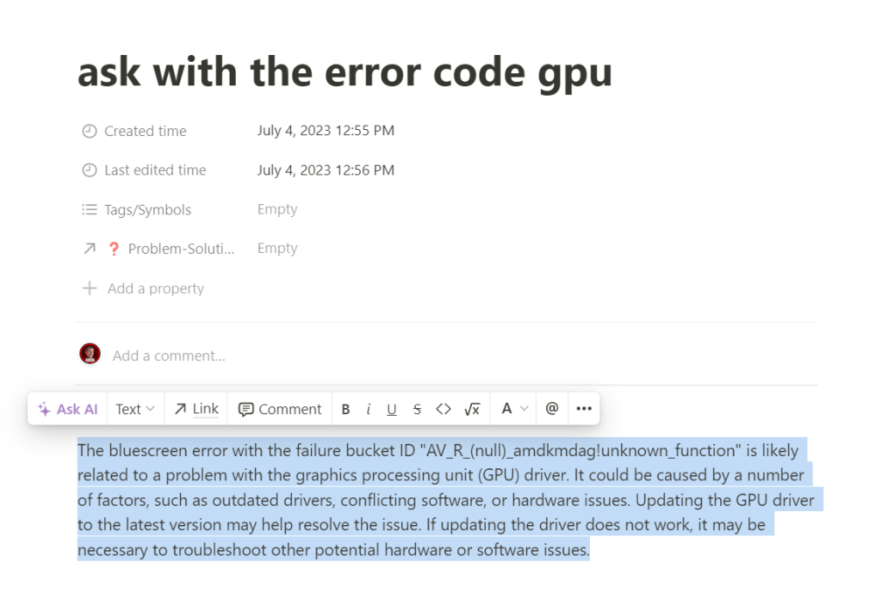
Workstation having a hard time
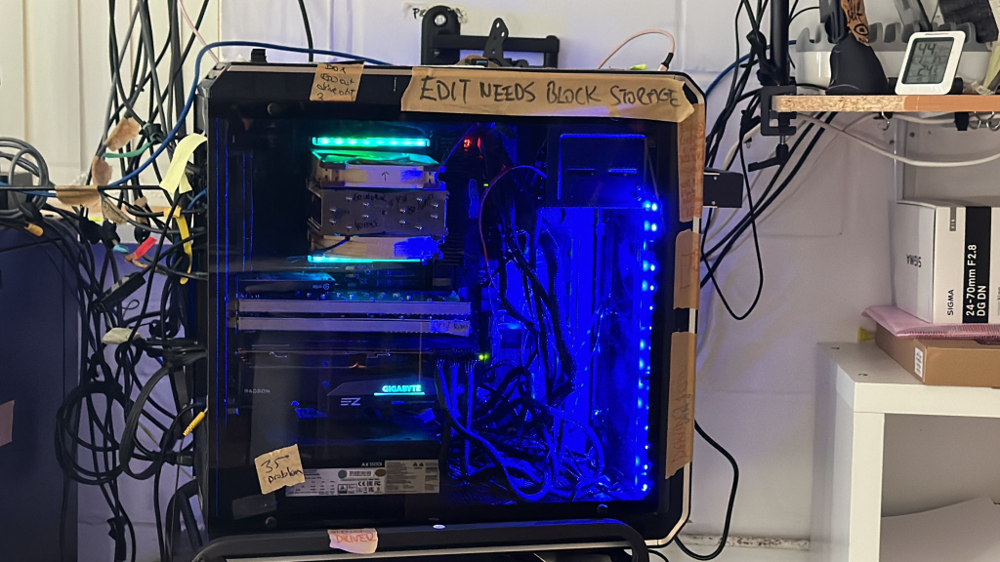
Used the debugging tools suspecting the driver of the gpu or the display cable maybe
I did memory checks
No device drivers have an issue
I'm a on the motherboard and cpu
Maybe buy a new set of 128gb ram modules and use the old ones for backup
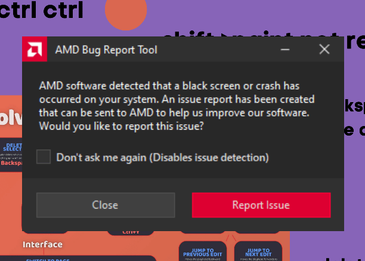
cant be filled too much data asked
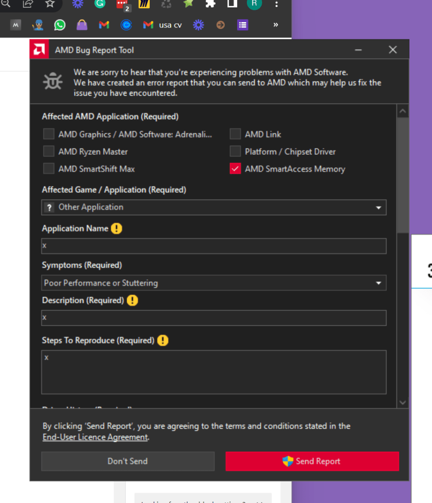
Logs
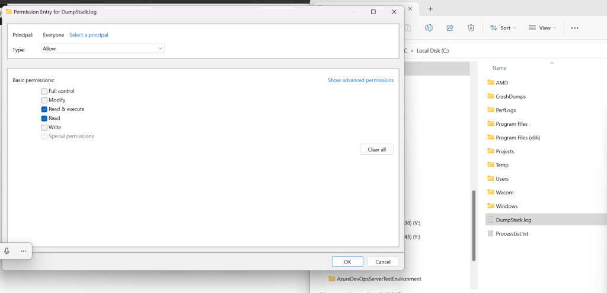
Log
`DLOGFILE00010000DUMP8#
Dump stack initialized at UTC: 2023/07/04 06:44:10, local time: 2023/07/04 07:44:10.
BugCheckCode 0x0000000000000050
BugCheckP1 0xFFFFD38E480C2000
BugCheckP2 0x0000000000000000
BugCheckP3 0xFFFFF8017B020FF1
BugCheckP4 0x0000000000000000
Progress 0x00000042
Elapsed BugCheck duration 00002307ms
Starting get secondary dump callbacks size.
Progress 0x00000052
Finish get secondary dump callbacks size.
Dump Type: 6, Total Dump Size: 5487245260, Secondary Dump Size: 1091532.
Starting write of dump header.
Finish write of dump header.
Starting write of kernel bitmap dump header.
Finish write of bitmap dump header.
Starting write of memory dump data.
Elapsed BugCheck duration 00002634ms
Dumping physical memory to disk: 0%
Dumping physical memory to disk: 5%
Dumping physical memory to disk: 10%
Dumping physical memory to disk: 15%
Dumping physical memory to disk: 20%
Dumping physical memory to disk: 25%
Dumping physical memory to disk: 30%
Dumping physical memory to disk: 35%
Dumping physical memory to disk: 40%
Dumping physical memory to disk: 45%
Dumping physical memory to disk: 50%
Dumping physical memory to disk: 55%
Dumping physical memory to disk: 60%
Dumping physical memory to disk: 65%
Dumping physical memory to disk: 70%
Dumping physical memory to disk: 75%
Dumping physical memory to disk: 80%
Dumping physical memory to disk: 85%
Dumping physical memory to disk: 90%
Dumping physical memory to disk: 95%
Dumping physical memory to disk: 100%
Finish write of bitmap dump data. Total pages:1337063 Pages written:1337063
Progress 0x00000043
Elapsed BugCheck duration 00021053ms
Starting invoking secondary dump callbacks.
Calling Win32kWPP secondary callback.
Return from Win32kWPP secondary callback.
Writing Win32kWPP secondary callback data.
Writing Win32kWPP secondary callback data done.
Calling Win32kWPP secondary callback.
Return from Win32kWPP secondary callback.
Writing Win32kWPP secondary callback data.
Writing Win32kWPP secondary callback data done.
Calling Win32kWPP secondary callback.
Return from Win32kWPP secondary callback.
Writing Win32kWPP secondary callback data.
Writing Win32kWPP secondary callback data done.
Calling Win32kWPP secondary callback.
Return from Win32kWPP secondary callback.
Writing Win32kWPP secondary callback data.
Writing Win32kWPP secondary callback data done.
Calling Win32kWPP secondary callback.
Return from Win32kWPP secondary callback.
Writing Win32kWPP secondary callback data.
Writing Win32kWPP secondary callback data done.
Calling Win32kWPP secondary callback.
Return from Win32kWPP secondary callback.
Writing Win32kWPP secondary callback data.
Writing Win32kWPP secondary callback data done.
Calling Win32kWPP secondary callback.
Return from Win32kWPP secondary callback.
Writing Win32kWPP secondary callback data.
Writing Win32kWPP secondary callback data done.
Calling CRASHDUMP secondary callback.
Return from CRASHDUMP secondary callback.
Writing CRASHDUMP secondary callback data.
Writing CRASHDUMP secondary callback data done.
Calling Win32kWPP secondary callback.
Return from Win32kWPP secondary callback.
Writing Win32kWPP secondary callback data.
Writing Win32kWPP secondary callback data done.
Calling Win32kWPP secondary callback.
Return from Win32kWPP secondary callback.
Writing Win32kWPP secondary callback data.
Writing Win32kWPP secondary callback data done.
Calling Win32kWPP secondary callback.
Return from Win32kWPP secondary callback.
Writing Win32kWPP secondary callback data.
Writing Win32kWPP secondary callback data done.
Calling Win32kWPP secondary callback.
Return from Win32kWPP secondary callback.
Writing Win32kWPP secondary callback data.
Writing Win32kWPP secondary callback data done.
Calling Win32kWPP secondary callback.
Return from Win32kWPP secondary callback.
Writing Win32kWPP secondary callback data.
Writing Win32kWPP secondary callback data done.
Calling Win32kWPP secondary callback.
Return from Win32kWPP secondary callback.
Writing Win32kWPP secondary callback data.
Writing Win32kWPP secondary callback data done.
Calling Win32kWPP secondary callback.
Return from Win32kWPP secondary callback.
Writing Win32kWPP secondary callback data.
Writing Win32kWPP secondary callback data done.
Calling AX88179A secondary callback.
Return from AX88179A secondary callback.
Writing AX88179A secondary callback data.
Writing AX88179A secondary callback data done.
Calling ibtdrv secondary callback.
Return from ibtdrv secondary callback.
Writing ibtdrv secondary callback data.
Writing ibtdrv secondary callback data done.
Calling Intel Wireless WiFi Link Adapter secondary callback.
Return from Intel Wireless WiFi Link Adapter secondary callback.
Writing Intel Wireless WiFi Link Adapter secondary callback data.
Writing Intel Wireless WiFi Link Adapter secondary callback data done.
Calling wdiwifi secondary callback.
Return from wdiwifi secondary callback.
Writing wdiwifi secondary callback data.
Writing wdiwifi secondary callback data done.
Calling wdiwifi secondary callback.
Return from wdiwifi secondary callback.
Writing wdiwifi secondary callback data.
Writing wdiwifi secondary callback data done.
Calling secondary callback.
Return from secondary callback.
Writing secondary callback data.
Writing secondary callback data done.
Calling secondary callback.
Return from secondary callback.
Writing secondary callback data.
Writing secondary callback data done.
Calling \Device\DxgKrnl secondary callback.
Return from \Device\DxgKrnl secondary callback.
Writing \Device\DxgKrnl secondary callback data.
Writing \Device\DxgKrnl secondary callback data done.
Calling IoBugCheckDriverData secondary callback.
Return from IoBugCheckDriverData secondary callback.
Writing IoBugCheckDriverData secondary callback data.
Writing IoBugCheckDriverData secondary callback data done.
Calling PortDriverStandard secondary callback.
Return from PortDriverStandard secondary callback.
Writing PortDriverStandard secondary callback data.
Writing PortDriverStandard secondary callback data done.
Calling Wdf01000 secondary callback.
Return from Wdf01000 secondary callback.
Writing Wdf01000 secondary callback data.
Writing Wdf01000 secondary callback data done.
Calling blackbox - CI secondary callback.
Return from blackbox - CI secondary callback.
Writing blackbox - CI secondary callback data.
Writing blackbox - CI secondary callback data done.
Calling blackbox - Winlogon secondary callback.
Return from blackbox - Winlogon secondary callback.
Writing blackbox - Winlogon secondary callback data.
Writing blackbox - Winlogon secondary callback data done.
Calling blackbox - NTFS secondary callback.
Return from blackbox - NTFS secondary callback.
Writing blackbox - NTFS secondary callback data.
Writing blackbox - NTFS secondary callback data done.
Calling blackbox - PNP secondary callback.
Return from blackbox - PNP secondary callback.
Writing blackbox - PNP secondary callback data.
Writing blackbox - PNP secondary callback data done.
Calling blackbox - BSD secondary callback.
Return from blackbox - BSD secondary callback.
Writing blackbox - BSD secondary callback data.
Writing blackbox - BSD secondary callback data done.
Calling SecureKernelFailureLog secondary callback.
Return from SecureKernelFailureLog secondary callback.
Writing SecureKernelFailureLog secondary callback data.
Writing SecureKernelFailureLog secondary callback data done.
Calling SecureKernelCrashdumpArea secondary callback.
Return from SecureKernelCrashdumpArea secondary callback.
Writing SecureKernelCrashdumpArea secondary callback data.
Writing SecureKernelCrashdumpArea secondary callback data done.
Calling secondary multi-part dump callbacks.
Starting TRIAGEDUMPDATA multi-part secondary callback.
Finish TRIAGEDUMPDATA multi-part secondary callback.
Starting SMBiosData multi-part secondary callback.
Finish SMBiosData multi-part secondary callback.
Starting SMBiosRegistry multi-part secondary callback.
Finish SMBiosRegistry multi-part secondary callback.
Starting SMBiosRegisters multi-part secondary callback.
Finish SMBiosRegisters multi-part secondary callback.
Starting SMBiosDataACPI multi-part secondary callback.
Finish SMBiosDataACPI multi-part secondary callback.
Starting PCI multi-part secondary callback.
Finish PCI multi-part secondary callback.
Starting Etw multi-part secondary callback.
Finish Etw multi-part secondary callback.
Finish calling secondary multi-part dump callbacks.
Progress 0x00000045
Finish invoking secondary dump callbacks.
Starting invoking dump complete callbacks.
Progress 0x00000046
Finish invoking dump complete callbacks.
Dump ended at UTC: 2023/07/04 06:44:10, local time: 2023/07/04 07:44:10.
Elapsed BugCheck duration 00021105ms
Dump completed successfully.
Progress 0x00000053
`
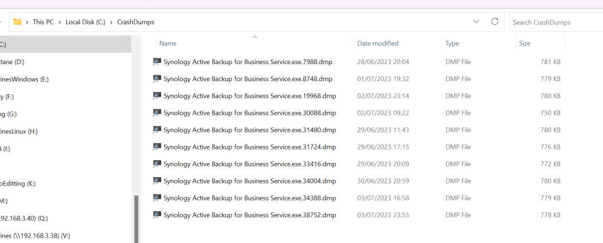
Memory dump
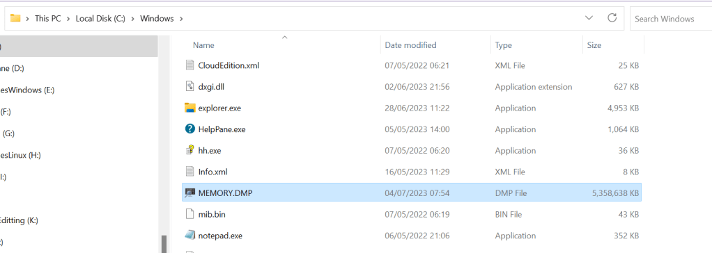
Double click
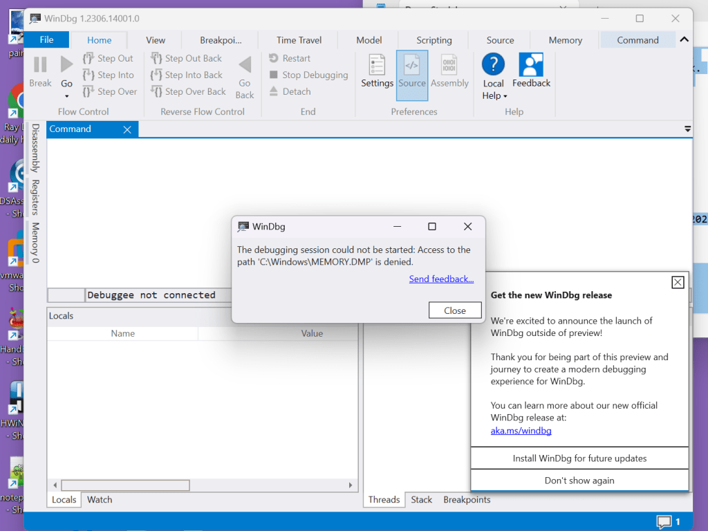
https://aka.ms/windbg/download
Run analyze
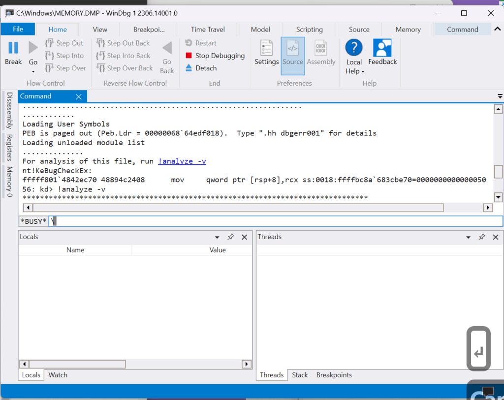
Log
SYMBOL_NAME: amdkmdag+420ff1
STACK_COMMAND: .cxr; .ecxr ; kb
BUCKET_ID_FUNC_OFFSET: 420ff1
FAILURE_BUCKET_ID: AV_R_(null)_amdkmdag!unknown_function
OS_VERSION: 10.0.22621.1928
BUILDLAB_STR: ni_release_svc_prod3
OSPLATFORM_TYPE: x64
OSNAME: Windows 10
FAILURE_ID_HASH: {4466913e-541c-81d0-16be-c240d1d39c9d}
Followup: MachineOwner
Detailed Log
*** Preparing the environment for Debugger Extensions Gallery repositories **
ExtensionRepository : Implicit
UseExperimentalFeatureForNugetShare : false
AllowNugetExeUpdate : false
AllowNugetMSCredentialProviderInstall : false
AllowParallelInitializationOfLocalRepositories : true
-- Configuring repositories
----> Repository : LocalInstalled, Enabled: true
----> Repository : UserExtensions, Enabled: true
Preparing the environment for Debugger Extensions Gallery repositories completed, duration 0.000 seconds
*** Waiting for Debugger Extensions Gallery to Initialize **
Waiting for Debugger Extensions Gallery to Initialize completed, duration 0.031 seconds
----> Repository : UserExtensions, Enabled: true, Packages count: 0
----> Repository : LocalInstalled, Enabled: true, Packages count: 36
Microsoft (R) Windows Debugger Version 10.0.25877.1004 AMD64
Copyright (c) Microsoft Corporation. All rights reserved.
Loading Dump File [C:\Windows\MEMORY.DMP]
Kernel Bitmap Dump File: Kernel address space is available, User address space may not be available.
Primary dump contents written successfully
Symbol search path is: srv*
Executable search path is:
Windows 10 Kernel Version 22621 MP (128 procs) Free x64
Product: WinNt, suite: TerminalServer SingleUserTS
Edition build lab: 22621.1928.amd64fre.ni_release_svc_prod3.230622-0951
Kernel base = 0xfffff80148000000 PsLoadedModuleList = 0xfffff80148c13480
Debug session time: Tue Jul 4 07:44:10.941 2023 (UTC + 1:00)
System Uptime: 0 days 0:02:04.667
Loading Kernel Symbols
...............................................................
................................................................
................................................................
................................................................
............
Loading User Symbols
PEB is paged out (Peb.Ldr = 0000006864edf018). Type ".hh dbgerr001" for details
Loading unloaded module list
..............
For analysis of this file, run !analyze -v
nt!KeBugCheckEx:
fffff8014842ec70 48894c2408 mov qword ptr [rsp+8],rcx ss:0018:ffffbc8a`683cbe70=0000000000000050
56: kd> !analyze -v
- *
- Bugcheck Analysis *
- *
PAGE_FAULT_IN_NONPAGED_AREA (50)
Invalid system memory was referenced. This cannot be protected by try-except.
Typically the address is just plain bad or it is pointing at freed memory.
Arguments:
Arg1: ffffd38e480c2000, memory referenced.
Arg2: 0000000000000000, X64: bit 0 set if the fault was due to a not-present PTE.
bit 1 is set if the fault was due to a write, clear if a read.
bit 3 is set if the processor decided the fault was due to a corrupted PTE.
bit 4 is set if the fault was due to attempted execute of a no-execute PTE.
- ARM64: bit 1 is set if the fault was due to a write, clear if a read.
bit 3 is set if the fault was due to attempted execute of a no-execute PTE.
Arg3: fffff8017b020ff1, If non-zero, the instruction address which referenced the bad memory
address.
Arg4: 0000000000000000, (reserved)
Debugging Details:
*** WARNING: Check Image - Checksum mismatch - Dump: 0x9606, File: 0xa5d6 - C:\ProgramData\Dbg\sym\hal.dll\1865382A6000\hal.dll
KEY_VALUES_STRING: 1
Key : AV.Type
Value: Read
Key : Analysis.CPU.mSec
Value: 4327
Key : Analysis.Elapsed.mSec
Value: 8567
Key : Analysis.IO.Other.Mb
Value: 14
Key : Analysis.IO.Read.Mb
Value: 0
Key : Analysis.IO.Write.Mb
Value: 45
Key : Analysis.Init.CPU.mSec
Value: 499
Key : Analysis.Init.Elapsed.mSec
Value: 27445
Key : Analysis.Memory.CommitPeak.Mb
Value: 136
Key : Bugcheck.Code.KiBugCheckData
Value: 0x50
Key : Bugcheck.Code.LegacyAPI
Value: 0x50
Key : Dump.Attributes.AsUlong
Value: 1800
Key : Dump.Attributes.DiagDataWrittenToHeader
Value: 1
Key : Dump.Attributes.ErrorCode
Value: 0
Key : Dump.Attributes.LastLine
Value: Dump completed successfully.
Key : Dump.Attributes.ProgressPercentage
Value: 100
Key : Failure.Bucket
Value: AV_R_(null)_amdkmdag!unknown_function
Key : Failure.Hash
Value: {4466913e-541c-81d0-16be-c240d1d39c9d}
Key : Hypervisor.Enlightenments.ValueHex
Value: 1497cf94
Key : Hypervisor.Flags.AnyHypervisorPresent
Value: 1
Key : Hypervisor.Flags.ApicEnlightened
Value: 1
Key : Hypervisor.Flags.ApicVirtualizationAvailable
Value: 0
Key : Hypervisor.Flags.AsyncMemoryHint
Value: 0
Key : Hypervisor.Flags.CoreSchedulerRequested
Value: 0
Key : Hypervisor.Flags.CpuManager
Value: 1
Key : Hypervisor.Flags.DeprecateAutoEoi
Value: 0
Key : Hypervisor.Flags.DynamicCpuDisabled
Value: 1
Key : Hypervisor.Flags.Epf
Value: 0
Key : Hypervisor.Flags.ExtendedProcessorMasks
Value: 1
Key : Hypervisor.Flags.HardwareMbecAvailable
Value: 1
Key : Hypervisor.Flags.MaxBankNumber
Value: 1
Key : Hypervisor.Flags.MemoryZeroingControl
Value: 0
Key : Hypervisor.Flags.NoExtendedRangeFlush
Value: 0
Key : Hypervisor.Flags.NoNonArchCoreSharing
Value: 1
Key : Hypervisor.Flags.Phase0InitDone
Value: 1
Key : Hypervisor.Flags.PowerSchedulerQos
Value: 0
Key : Hypervisor.Flags.RootScheduler
Value: 0
Key : Hypervisor.Flags.SynicAvailable
Value: 1
Key : Hypervisor.Flags.UseQpcBias
Value: 0
Key : Hypervisor.Flags.Value
Value: 4854255
Key : Hypervisor.Flags.ValueHex
Value: 4a11ef
Key : Hypervisor.Flags.VpAssistPage
Value: 1
Key : Hypervisor.Flags.VsmAvailable
Value: 1
Key : Hypervisor.RootFlags.AccessStats
Value: 1
Key : Hypervisor.RootFlags.CrashdumpEnlightened
Value: 1
Key : Hypervisor.RootFlags.CreateVirtualProcessor
Value: 1
Key : Hypervisor.RootFlags.DisableHyperthreading
Value: 0
Key : Hypervisor.RootFlags.HostTimelineSync
Value: 1
Key : Hypervisor.RootFlags.HypervisorDebuggingEnabled
Value: 0
Key : Hypervisor.RootFlags.IsHyperV
Value: 1
Key : Hypervisor.RootFlags.LivedumpEnlightened
Value: 1
Key : Hypervisor.RootFlags.MapDeviceInterrupt
Value: 1
Key : Hypervisor.RootFlags.MceEnlightened
Value: 1
Key : Hypervisor.RootFlags.Nested
Value: 0
Key : Hypervisor.RootFlags.StartLogicalProcessor
Value: 1
Key : Hypervisor.RootFlags.Value
Value: 1015
Key : Hypervisor.RootFlags.ValueHex
Value: 3f7
Key : SecureKernel.HalpHvciEnabled
Value: 0
Key : WER.OS.Branch
Value: ni_release_svc_prod3
Key : WER.OS.Version
Value: 10.0.22621.1928
BUGCHECK_CODE: 50
BUGCHECK_P1: ffffd38e480c2000
BUGCHECK_P2: 0
BUGCHECK_P3: fffff8017b020ff1
BUGCHECK_P4: 0
FILE_IN_CAB: MEMORY.DMP
DUMP_FILE_ATTRIBUTES: 0x1800
READ_ADDRESS: ffffd38e480c2000 Paged pool
MM_INTERNAL_CODE: 0
IMAGE_NAME: amdkmdag.sys
MODULE_NAME: amdkmdag
FAULTING_MODULE: fffff8017ac00000 amdkmdag
BLACKBOXBSD: 1 (!blackboxbsd)
BLACKBOXNTFS: 1 (!blackboxntfs)
BLACKBOXPNP: 1 (!blackboxpnp)
BLACKBOXWINLOGON: 1
PROCESS_NAME: dwm.exe
TRAP_FRAME: ffffbc8a683cc090 -- (.trap 0xffffbc8a683cc090)
NOTE: The trap frame does not contain all registers.
Some register values may be zeroed or incorrect.
rax=ffff99f98c759400 rbx=0000000000000000 rcx=0000000000000000
rdx=000000000000004b rsi=0000000000000000 rdi=0000000000000000
rip=fffff8017b020ff1 rsp=ffffbc8a683cc228 rbp=ffff99f98c740000
r8=ffffd38e480c2000 r9=0000000000000097 r10=0000000000000009
r11=0000000000000001 r12=0000000000000000 r13=0000000000000000
r14=0000000000000000 r15=0000000000000000
iopl=0 nv up ei pl nz ac po nc
amdkmdag+0x420ff1:
fffff8017b020ff1 498b08 mov rcx,qword ptr [r8] ds:ffffd38e480c2000=????????????????
Resetting default scope
STACK_TEXT:
ffffbc8a683cbe68 fffff8014848fd4d : 0000000000000050 ffffd38e480c2000 0000000000000000 ffffbc8a683cc090 : nt!KeBugCheckEx
ffffbc8a683cbe70 fffff80148233fbc : ffffbc8a683cc110 0000000000000000 0000000000000000 ffffd38e480c2000 : nt!MiSystemFault+0x25f7cd
ffffbc8a683cbf70 fffff8014843f829 : 0000000000000000 0000000000000000 0000000000000000 0000000000000000 : nt!MmAccessFault+0x29c
ffffbc8a683cc090 fffff8017b020ff1 : fffff8017b02051d ffffe488f82a7690 0000000000000100 0000000000000100 : nt!KiPageFault+0x369
ffffbc8a683cc228 fffff8017b02051d : ffffe488f82a7690 0000000000000100 0000000000000100 ffffe488f82a7690 : amdkmdag+0x420ff1
ffffbc8a683cc230 fffff8017b02390d : 0000009b00000000 ffffe488f82a7690 0000000000000000 0000000000000002 : amdkmdag+0x42051d
ffffbc8a683cc2b0 fffff8017af92a7a : 0000000000000003 0000000000000000 ffffbc8a683cc400 0000000000000006 : amdkmdag+0x42390d
ffffbc8a683cc320 fffff8017b023643 : 0000000000000000 ffffbc8a683cc460 00000a0000000000 fffff8017ac0e7c5 : amdkmdag+0x392a7a
ffffbc8a683cc350 fffff8017aec7b83 : 0000000000000000 0000000000000003 ffffe488fb1a2000 ffffbc8a683cc460 : amdkmdag+0x423643
ffffbc8a683cc390 fffff8017ae86f6a : ffffe488f4f4ec70 ffffe488facec000 ffffbc8a683cc460 fffff8017ade0039 : amdkmdag+0x2c7b83
ffffbc8a683cc3c0 fffff8017ada98f8 : ffffe488f4f4ec70 ffffe488be941cc0 ffffe488facec000 0000000000000000 : amdkmdag+0x286f6a
ffffbc8a683cc410 fffff8017ac3a71f : ffffe488c8765000 0000000000000000 ffffe488fb617220 0000000000000005 : amdkmdag+0x1a98f8
ffffbc8a683cc440 fffff8017ad06aaa : ffffe488fb617220 fffff8014d25f21f 0000000000000000 fffff8014d3fd664 : amdkmdag+0x3a71f
ffffbc8a683cc4a0 fffff8017acfccc0 : ffffe488fb617220 ffffe488c8642000 ffffe488c8765000 0000000000000100 : amdkmdag+0x106aaa
ffffbc8a683cc4d0 fffff8014d506628 : ffffe488c0000001 ffffbc8a683cc599 ffffe488f4f2d7e0 fffff8014d576e63 : amdkmdag+0xfccc0
ffffbc8a683cc520 fffff8014d4db786 : 0000000000000000 ffffbc8a683cc700 0000000000000000 ffffe488fb616ee8 : dxgkrnl!ADAPTER_DISPLAY::DdiSetPointerShape+0xe8
ffffbc8a683cc600 fffff8014d431155 : 000000000002df25 ffffbc8a683cc8d0 ffffd38e2483f490 ffffd38e2483f490 : dxgkrnl!SetPointerShapeForDisplaySource+0xaa506
ffffbc8a683cc7d0 fffff8014d430f3d : 0000000000000000 0000000000000000 0000010000000100 ffffd31f34e86c18 : dxgkrnl!DxgkSetPointerShape+0x1f5
ffffbc8a683cc970 ffffbb99299b2b64 : ffffd38e2483f480 0000000000000000 fffff801974466d8 000000000000ff00 : dxgkrnl!DxgkCddSetPointerShape+0x5d
ffffbc8a683cc9c0 ffffbb99299b2a38 : 000000000000197c ffffd38e2483f480 0000000000000000 0000000000000000 : cdd!bSetHardwarePointerShape+0xf8
ffffbc8a683cca40 ffffbb99299b2971 : 0000000000000005 0000000000000000 ffff320b00000000 ffffbc8a00000000 : cdd!SetPointerShapeInternal+0xb8
ffffbc8a683ccac0 ffffbb99296802f1 : 0000000000000000 ffffbc8a683ccc20 fffff801a569ba20 0000000000000000 : cdd!DrvSetPointerShape+0x51
ffffbc8a683ccb20 ffffbb99296f90ae : fffff80167964000 0000000000000000 0000000000000000 ffffe488f96dd0c0 : win32kfull!vSetPointer+0x5cd
ffffbc8a683ccc90 ffffbb992967c19d : fffff80167708690 fffff80167708690 ffffd38e00000000 fffff80100000032 : win32kfull!GreSetPointer+0x7ccb6
ffffbc8a683ccd40 ffffbb9929663f8e : ffffbb9929935658 fffff80167700000 fffff80167708640 0000000000000001 : win32kfull!CursorApiRouter::SetPointerShape+0xc1
ffffbc8a683ccda0 ffffbb99296116d5 : ffffd38e20a1c140 ffffbc8a683ccef1 0000000000000100 ffffd38e20a1c140 : win32kfull!zzzUpdateCursorImage+0x18e
ffffbc8a683cce00 ffffbb9929610b92 : 0000000000000000 0000000000000019 000000000001e600 ffffbc8a683cd630 : win32kfull!CCursorSizes::zzzUpdateGlobalCursorSize+0x115
ffffbc8a683cce30 ffffbb992960fd87 : 0000000000000000 0000000000000000 0000000000000000 0000000000000000 : win32kfull!xxxMoveEventAbsolute+0x48e
ffffbc8a683ccf40 ffffbb992a7acd7b : 0000000000000000 ffffbc8a683cd118 ffffbc8a683cd688 0000000000000000 : win32kfull!EditionCommitMousePosAndMove+0x97
ffffbc8a683ccfb0 ffffbb992a778585 : 0000000000000001 0000000000000000 000000000000003f ffffbc8a683cd170 : win32kbase!EditionCommitMousePosAndMove+0x83
ffffbc8a683cd020 ffffbb992a64bf5a : 0000000000000001 ffffbc8a683cd129 0000000000000000 0000000000000000 : win32kbase!ApiSetEditionCommitMousePosAndMove+0x125
ffffbc8a683cd0b0 ffffbb992a66c673 : ffffffc600000c76 ffffbc8a683cd290 ffffbc8a683cd670 0000000000000000 : win32kbase!CMouseProcessor::CommitMousePosAndMoveCursor+0x17a
ffffbc8a683cd190 ffffbb992a64cd5f : ffffffb800000c91 ffffffc600000c76 0000000000000000 0000000000000001 : win32kbase!CMouseProcessor::ProcessMouseInputData+0xb48d7
ffffbc8a683cd4f0 ffffbb992a64b27a : ffffd38e22473000 ffffbb992a64b2fd ffffd38e224735e0 ffffd38e22473060 : win32kbase!CMouseProcessor::ProcessInput+0x61b
ffffbc8a683cd720 ffffbb992a64b4b3 : ffffd38e22473060 000000004a51529f ffffd38e224735e0 ffffe48900fe60b8 : win32kbase!CMouseSensor::FlushMouseReports+0x42
ffffbc8a683cd760 ffffbb992a64b3e4 : ffffd38e224730b0 0000000000000018 ffffd38e2333b200 ffffd38e22473060 : win32kbase!CMouseSensor::ProcessInputWithRateLimitingIfEnabled+0xb3
ffffbc8a683cd7b0 ffffbb992a56ece3 : 0000000000000000 0000000000000006 ffffd38e2333b201 ffff79f95ee00000 : win32kbase!CMouseSensor::ProcessInput+0x54
ffffbc8a683cd7f0 ffffbb992a5b8378 : 0000000000000002 0000000000000002 0000000000000000 0000000000000002 : win32kbase!CBaseInput::OnReadNotification+0xb3
ffffbc8a683cd850 ffffbb992a5b82a2 : 0000000000000001 0000000000000001 0000000000000000 ffffbb992a75b3f0 : win32kbase!CBaseInput::OnDispatcherObjectSignaled+0xc8
ffffbc8a683cd8b0 ffffbb992a5bba05 : 0000000000000001 0000000000000001 ffffd38e2333b2b0 ffffd38e2333b2b0 : win32kbase!CBaseInput::_OnDispatcherObjectSignaled+0x12
ffffbc8a683cd8e0 ffffbb992a5b8c65 : 0000000000000000 0000000000000000 0000000000000000 0000000000000000 : win32kbase!IOCPDispatcher::HandleSensorDispatcherSignal+0x75
ffffbc8a683cd940 ffffbb992a5b8050 : 0000000000000001 0000000000000001 0000000000000000 0000000000000000 : win32kbase!IOCPDispatcher::Dispatch+0x15
ffffbc8a683cd9a0 ffffbb992a626581 : 0000000000000000 0000019d8645f090 0000000000000020 00000000000002e4 : win32kbase!UserKSTWait+0x130
ffffbc8a683cda80 ffffbb9929400a7d : ffffe488f96dd0c0 ffffbc8a683cdb60 0000019d8645f090 0000000000000018 : win32kbase!NtKSTWait+0x21
ffffbc8a683cdab0 fffff801484439e8 : ffffe4880000032f 00000000000002e4 00000000000002e8 0000000000000001 : win32k!NtKSTWait+0x15
ffffbc8a683cdae0 00007ffba5287ab4 : 0000000000000000 0000000000000000 0000000000000000 0000000000000000 : nt!KiSystemServiceCopyEnd+0x28
000000686537fb78 0000000000000000 : 0000000000000000 0000000000000000 0000000000000000 0000000000000000 : 0x00007ffb`a5287ab4
SYMBOL_NAME: amdkmdag+420ff1
STACK_COMMAND: .cxr; .ecxr ; kb
BUCKET_ID_FUNC_OFFSET: 420ff1
FAILURE_BUCKET_ID: AV_R_(null)_amdkmdag!unknown_function
OS_VERSION: 10.0.22621.1928
BUILDLAB_STR: ni_release_svc_prod3
OSPLATFORM_TYPE: x64
OSNAME: Windows 10
FAILURE_ID_HASH: {4466913e-541c-81d0-16be-c240d1d39c9d}
Followup: MachineOwner
DDU
Problem nicely mapped
Choco way
https://community.chocolatey.org/packages/ddu
Workstations > https://www.amd.com/en/graphics/workstations
detector tool
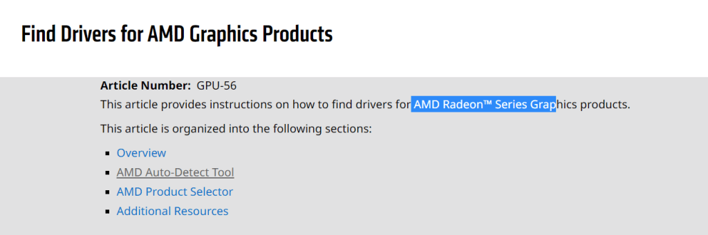
Current one
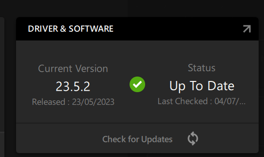
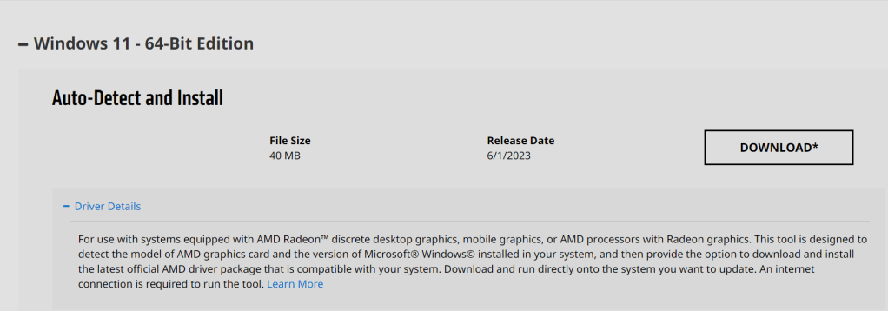
https://www.amd.com/en/support/graphics/amd-radeon-6000-series/amd-radeon-6900-series/amd-radeon-rx-6900-xt
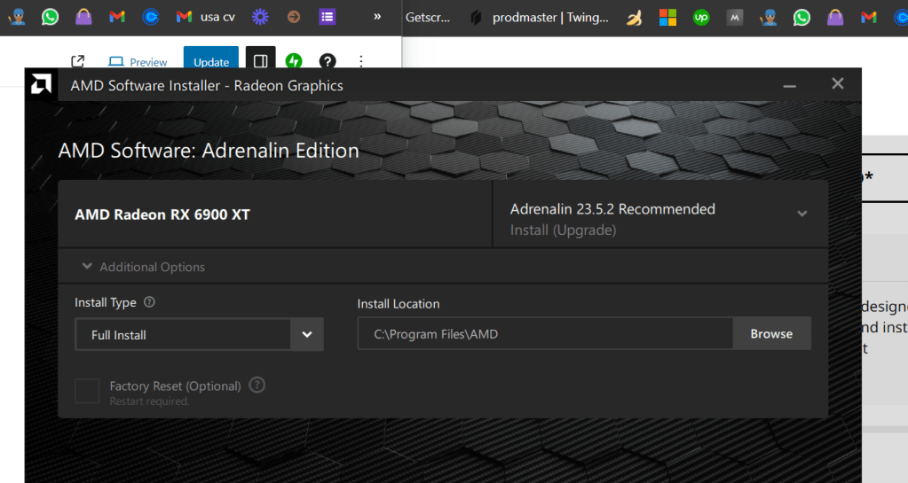
restart shift to restart in safe mode > 4
before ddu reinstall
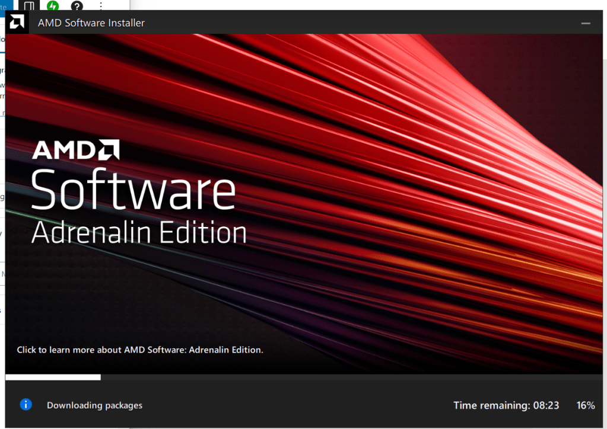
DDU location
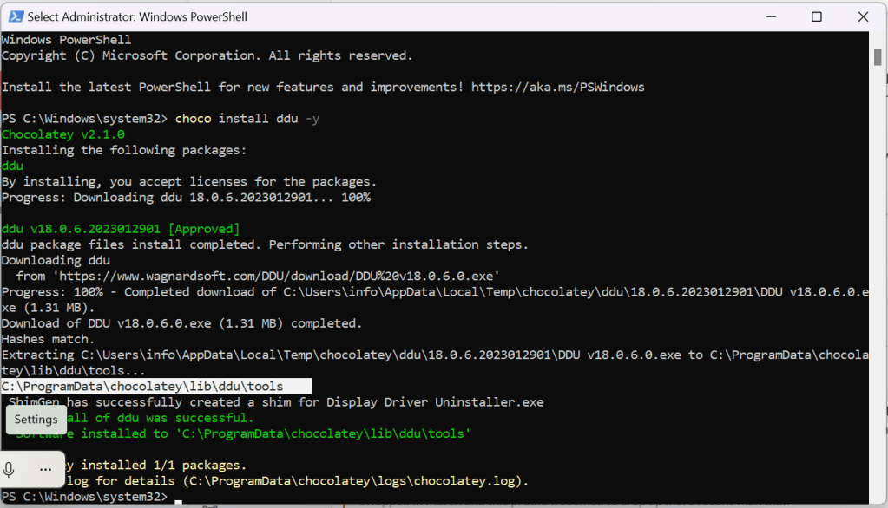
C:\ProgramData\chocolatey\lib\ddu\tools
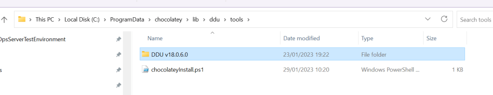
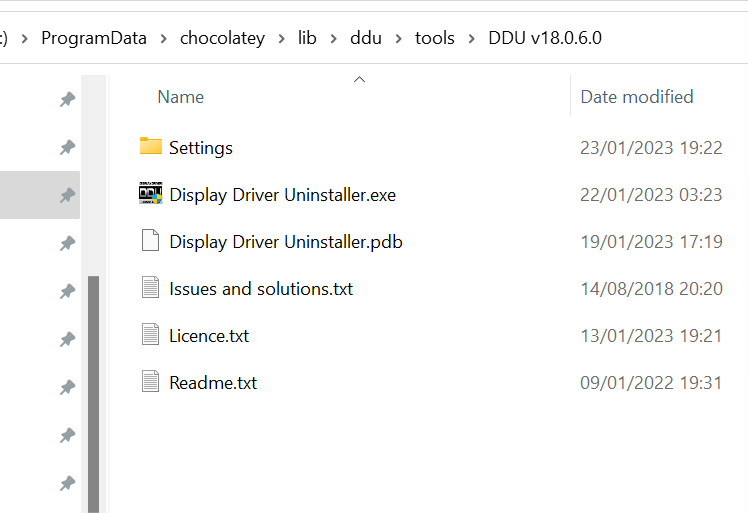
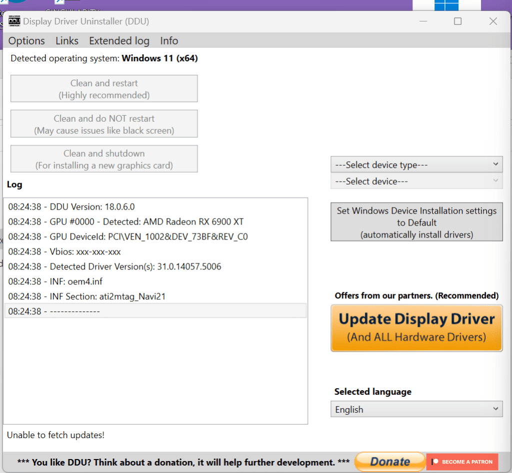
fear and scan
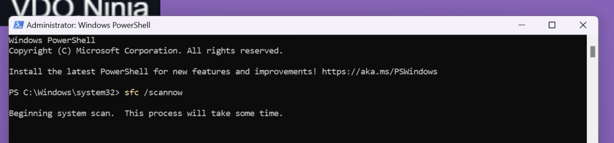
results
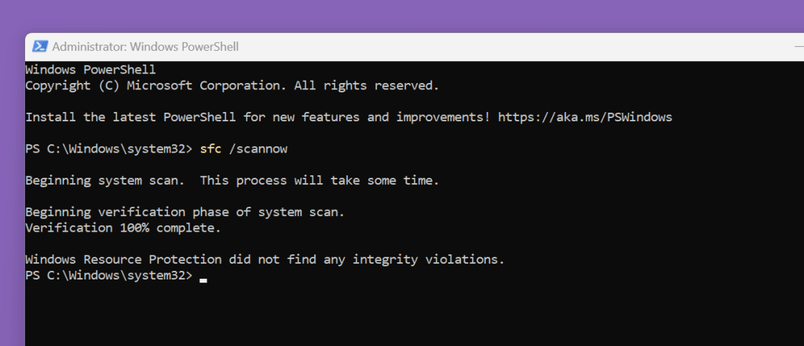
check gpu
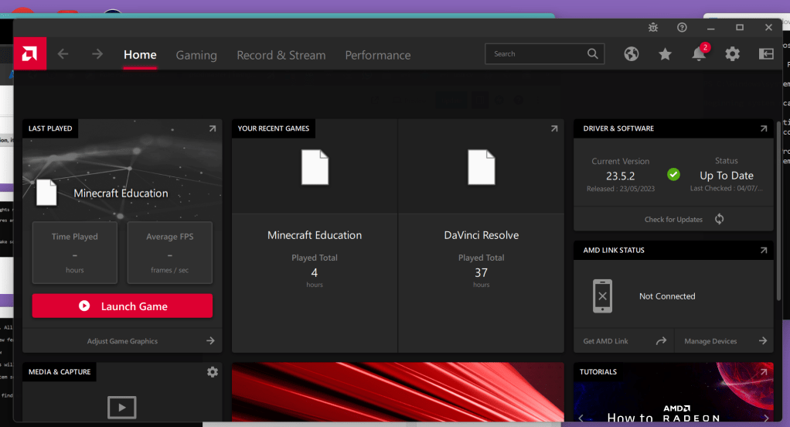
Get Rid of extensions and get a new cable
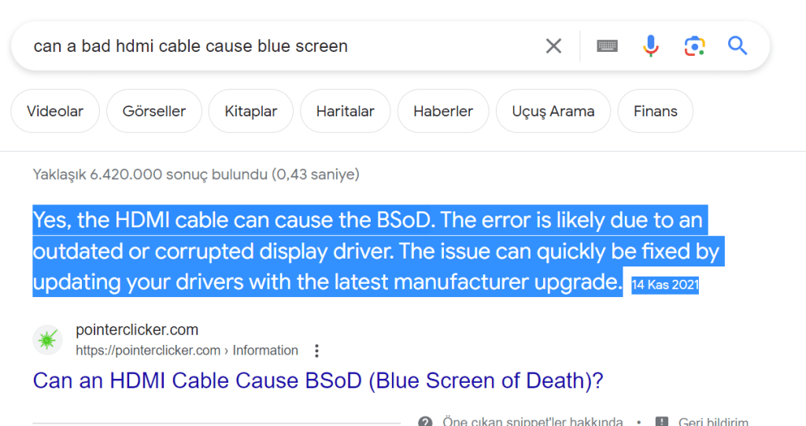
Remove > 1 connector at start one connector in the middle > 1 cable instead of 2
References
https://answers.microsoft.com/en-us/windows/forum/all/windows-bsod-videotdrfailure-amdkmdagsys/40ad9b65-ff2b-4c01-acc7-ea2d2ae3bc1b
Imported from rifaterdemsahin.com · 2023